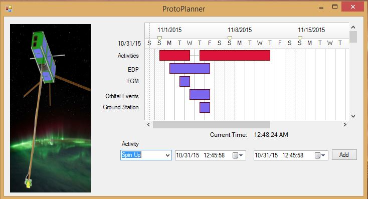
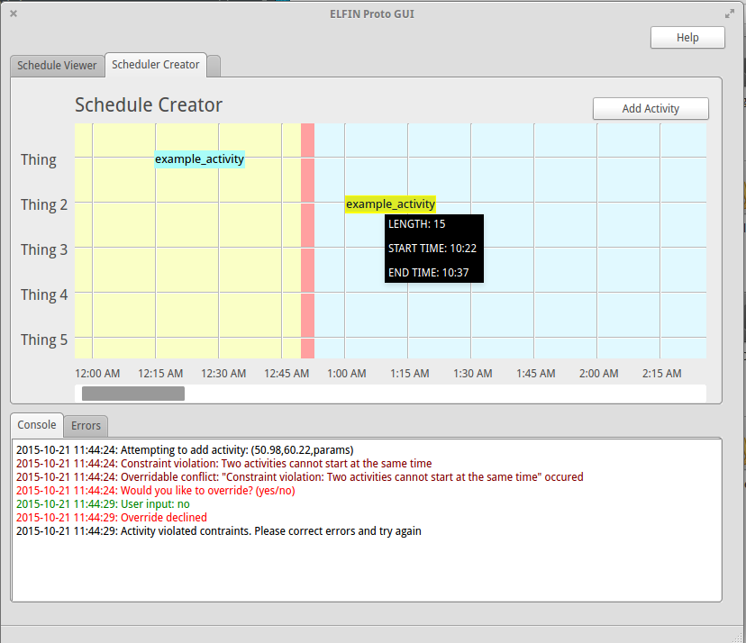
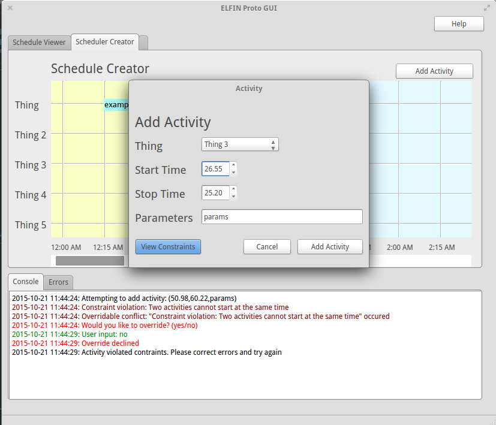
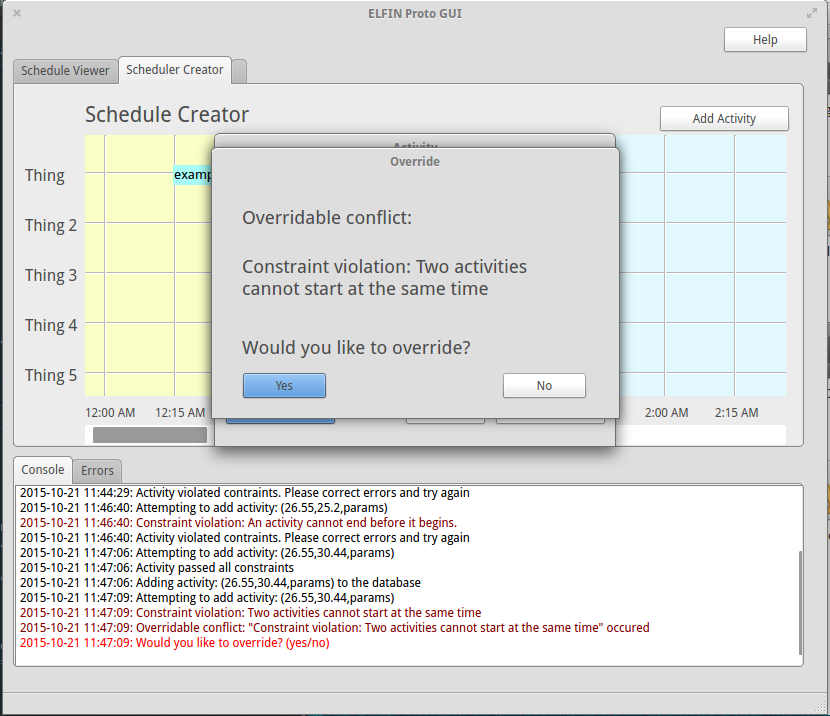
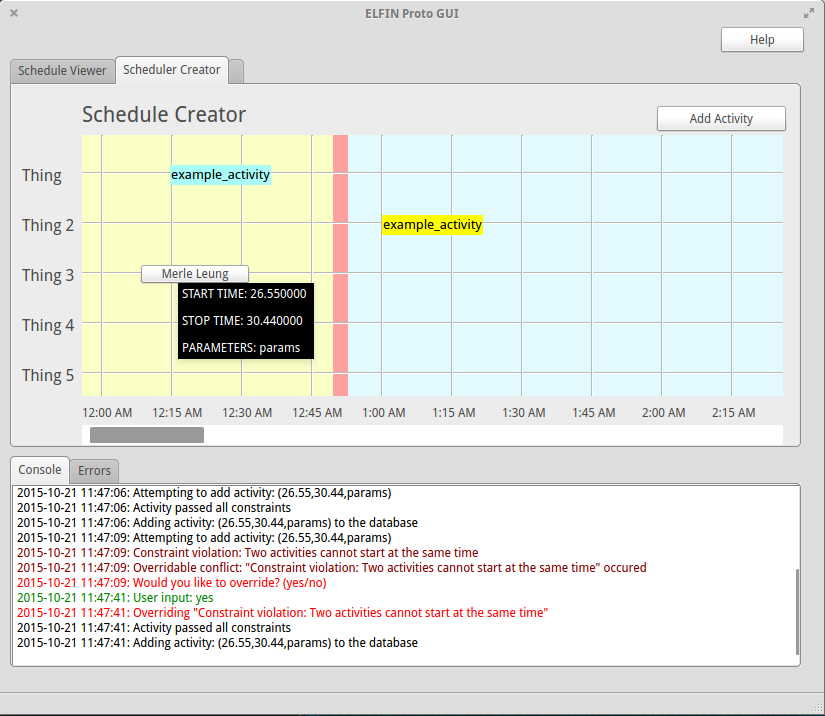

Planning and Scheduling Module
What It Does:
One of the first modules I wrote for the satellite. Responsible for:
- Viewing and creating schedules for equipment activation on the satellite
- Constraint checking
- Transmitting
- Interacting with database
First Draft
The first draft was creating a loose prototype in Visual C# to figure out which features the team did/didn't want.

Moving to Python and PyQT
Once features were solidified, I build an early version in Python and PyQt (the common language framework for most of the subsystem software). Features include:
- All activity and input/output logged in the console view.

- Create activities, which are first constraint checked.
- Manipulate activities and constraints stored in mySQL database.

- Ability to override constraints

- Drag activities around to construct schedule (restrained to the horizontal line they are on)
- Schedule is automatically rechecked for constraint violations after user change

- Generate Protobuf message out of schedule, transmit over TCP/IP to command and control module
- Schedule activities requested from other modules (such as manuver requests from the manuever planning module) over TCP/IP sockets and handle conflicts.